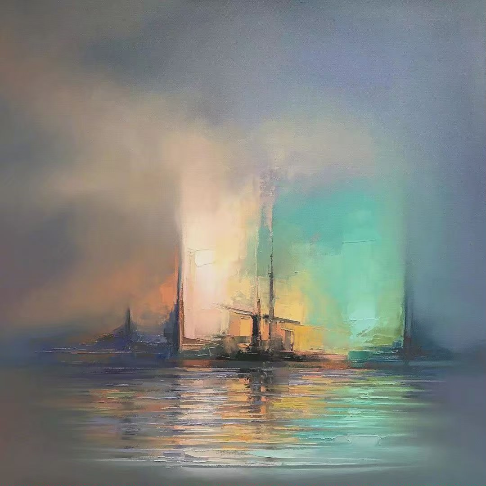

Dear whoever happens to be reading this right now, I'm glad to see you here. My name is Tina Shi and I am majoring in Computer Science and Art. As the majors suggest, I am passionate in designing, illustrating, and coding, where creativity can flow and the limitless possibilities and potentials can be both exciting and frustrating. I am interested in interactive media, especially games, where art and technology come together to tell storeis, construct worlds, and create experiences. Recently, I've been practicing pixel art for numerous game dev projects and also a website design. It's intricate in that there are only so many pixels you get to work with to represent something, yet at the same time, because there is a limited number of pixels, it also emphasizes abstraction, the ability to capture the essence within vagueness. Aside from pixel art, there's still a lot that I would like to learn and master.
This site is where I'll showcase my work for ART102MM: Mobile Media. I hope you enjoy your brief visit.
"
Great artists and great men of science do work which is in itself delightful; while they are doing it, it secures them the respect of those whose respect is worth having, which gives them the most fundamental kind of power, namely, powers over men's thoughts and feelings.
"
The Conquest of Happiness
Line of Action is an online library for gesture and figure drawing references. It's easy to tailor what you want to draw and how long you'd like to draw for each session with its filter for images and different options for duration. It has some pretty good references in store and has a pretty clean website design.
This site is hosted from this GitHub Repo